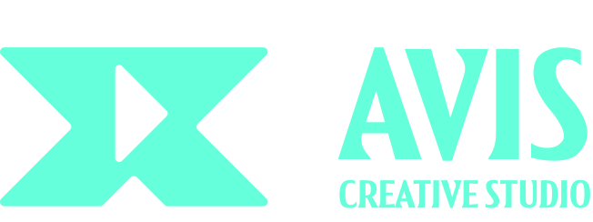

Hàng trăm shot cần tách lớp, xóa dây cáp và tạo depth pass gấp rút
Trong mùa cao điểm hậu kỳ phim chiếu rạp hoặc game cinematics, các tác vụ chuẩn bị trước khi Comp chiếm tỷ trọng giờ công rất lớn của đội Artist.

PROPOSAL 03 · VFX HOUSES, CGI/3D STUDIOS & ANIMATION IP PRODUCERSThiết kế riêng cho các VFX Supervisor, CG/Pipeline TD và xưởng phim hoạt hình 2D/3D: chạy Rotoscoping & Depth Anything V2 trực tiếp trên máy qua WebGPU, kết nối render 3D sang 300+ model tạo sinh trên đám mây không lo tràn VRAM, kèm chương trình tài trợ nguồn lực sản xuất và kết nối phát hành series/IP qua mạng lưới OTT quốc tế & Viettel Media.
Đúc kết từ quá trình làm việc trực tiếp cùng các studio, hãng phim, agency và doanh nghiệp công nghệ tại Việt Nam & quốc tế.
Trong mùa cao điểm hậu kỳ phim chiếu rạp hoặc game cinematics, các tác vụ chuẩn bị trước khi Comp chiếm tỷ trọng giờ công rất lớn của đội Artist.
Mỗi tháng lại xuất hiện frontier model mới (Seedance 2.5, Kling 4.0, Veo 3.1, Wan 3.0); tự nâng cấp phần cứng cho 20–100 artist làm tăng mạnh CAPEX.
Để biến năng lực gia công 3D/VFX thành tài sản IP dài hạn, studio cần cả công cụ sản xuất tốc độ cao lẫn đối tác đồng tài trợ và mở đường lên các nền tảng OTT.
Chọn từng phân đoạn bên dưới để xem chi tiết công cụ Cloud + On-device Local, chính sách thương mại và nguồn lực hệ sinh thái.
Giữ dữ liệu nhạy cảm ngay tại workstation nội bộ và tiết kiệm hoàn toàn chi phí cloud cho khâu tách lớp.
Kết nối mượt mà giữa Blender / Maya / Unreal / Director's Desk với các model video thế hệ mới.
Một API endpoint chuẩn OpenAI kết nối toàn bộ Image, Video, Audio & LLM cho tool nội bộ của studio.
Biến các dự án ấp ủ của studio thành series thương mại có đầu ra rõ ràng.
Toàn bộ video được phân phối trực tiếp từ hạ tầng AVIS Media CDN — nhấn Play trên từng khung hình để đối chiếu chất lượng thực tế.
Sinh vật khổng lồ, hiệu ứng ánh sáng năng lượng và đại cảnh thành phố giả tưởng tốc độ cao.
Giữ nguyên diện mạo, phục trang và ánh sáng nhân vật qua các góc máy chuyển động phức tạp.
Chuyển hóa render 3D và video đầu vào sang đa phong cách hoạt hình IP giữ nguyên chuyển động gốc.
Thiết lập không gian 3D, vị trí nhân vật và đường chạy camera làm chuẩn đầu vào cho pipeline VFX.
Thuộc hệ sinh thái Ninety Eight (10M+ người dùng toàn cầu) cùng cộng đồng Nghiện AI (631K+ thành viên), AVIS sở hữu mạng lưới hợp tác trực tiếp với các nền tảng OTT, đài truyền hình và các đơn vị phát triển / phát hành phim tại Việt Nam & quốc tế (Mỹ, Nhật Bản, Singapore, UAE, Ấn Độ, Brazil). Với các dự án điện ảnh, phim độc lập, series hoạt hình và short drama tiềm năng, AVIS sẵn sàng tài trợ gói hạ tầng AI / hỗ trợ nguồn lực sản xuất và đồng hành mở đường phân phối thương mại.
| Hạng mục | Hiện trạng cũ | Giải pháp AVIS | Giá trị đạt được |
|---|---|---|---|
| Concept Art & Lookdev Pre-viz | Mất nhiều ngày dựng 3D chi tiết trước khi đạo diễn chốt hướng look | Image-to-3D + 3D-to-Image-to-Video + Relight trên Cloud | Duyệt lookdev nhanh gấp 5 lần không chiếm dụng render farm |
| Roto, Masking & Depth Pass | Tốn nhiều ngày công junior artist cho các shot nháp và trung cảnh | Background Remover + Object Tracker + Depth Anything V2 Local | Chạy ngay trên máy cá nhân, bảo mật shot NDA, giảm tải tức thì |
| Đầu tư Hạ tầng GPU | Chi hàng tỷ đồng mua thêm card VRAM lớn nhưng nhanh lỗi thời | 300+ Cloud model cập nhật liên tục + thanh toán VND xuất e-VAT | Chuyển CAPEX thành OPEX linh hoạt theo dự án, tối ưu 10–20% |
| Phát triển Series / IP Gốc | Thiếu nguồn lực tài trợ giai đoạn đầu và kênh phát hành quốc tế | Tài trợ hạ tầng sản xuất + Kết nối OTT, Viettel Media & đối tác ngoại | Đồng hành đưa IP hoạt hình/VFX Việt Nam ra thị trường toàn cầu |
Mục tiêu: Sau buổi đào tạo thực chiến, đội ngũ của đối tác tự tay hoàn thiện được cảnh thử / luồng API chuẩn để đánh giá chất lượng và chi phí.
Trao đổi 15–30 phút để chọn 1 phân cảnh phim/TVC/dự án thực tế; khởi tạo Workspace tổ chức hoặc API Key kèm gói Credit PoC miễn phí.
Đội ngũ AVIS hướng dẫn trực tiếp (online hoặc tại văn phòng): Làm quen Node/API → Chuẩn bị Nhân vật/Storyboard → Dàn cảnh VCam/3D → Hậu kỳ & SRT.
Đội ngũ đối tác tự chạy ra shot/sản phẩm hoàn chỉnh; đối chiếu chất lượng thị giác, tốc độ duyệt bài và bảng kê chi phí thực tế bằng VND.
Triển khai hợp đồng linh hoạt theo dự án/tháng (0₫ cam kết tối thiểu trên Gateway, không ép gói năm trên Studio) và kết nối nguồn lực sản xuất – phát hành.